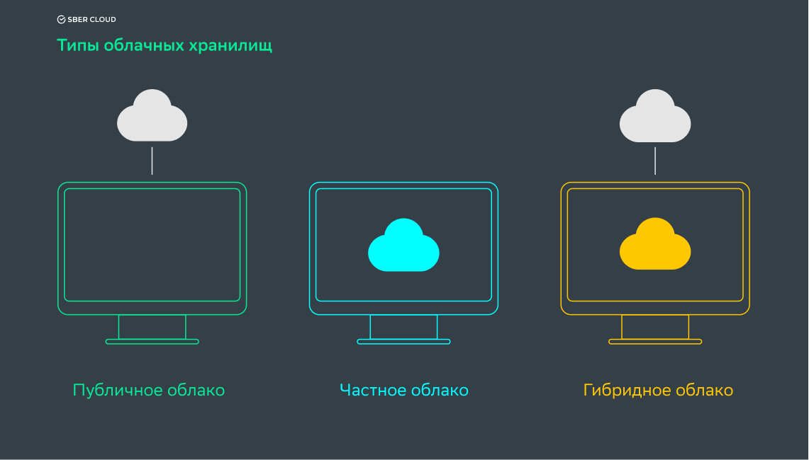

В 21 веке технологии стали неотъемлемой частью нашей жизни. Мир технологий, который меняется и развивается день ото дня, взял в сферу своего влияния множество секторов, причем не только в своей области. Инновации в области промышленности с Индустрией 4.0 подтолкнули отрасль логистики к развитию и изменению. Логистика; Управление запасами, управление складом, обслуживание клиентов и процессы управления информационными технологиями должны выполняться без ошибок, а логистические компании перешли к цифровизации и изменению своей инфраструктуры, поскольку их контроль будет очень сложным для отрасли, которая постоянно находится в движении.
Некоторыми технологическими системами, используемыми в логистике, являются системы радиочастотной идентификации (RFID), штрих-коды и матричные системы данных. Технологии RFID представляют собой систему, использующую радиочастотные волны для распознавания информации на метках на объектах. Система штрих-кодов и матриц данных используется для автоматического сканирования кодов, состоящих из вертикальных линий и пробелов разной толщины, и автоматической передачи данных на компьютер. Кроме того, для менеджеров очень важно планирование логистических процессов, и их потеря в результате какой-либо ошибки повлечет за собой убытки и сбои. Для этого еще одной технологией, имеющей большое значение с точки зрения логистики, являются облачные вычисления.
Облачные вычисления сделали возможным хранение и доступ к большим данным через Интернет с развитием технологий. Облачные вычисления — это процесс хранения данных, которые мы храним на наших жестких дисках, на виртуальных серверах в Интернете. Другими словами, ваш компьютер, на котором хранится ваша личная и профессиональная информация, становится просто устройством, которое позволяет вам подключаться к Интернету. Все офисные программы, ваши файлы, картинки, календарь, личная информация, словом, память компьютера начинает храниться в облаке. Вы можете выполнять свою работу, получая доступ к этой информации и программам из любого места и с любого устройства, которое можно подключить к Интернету.
В секторе логистики, где многие процессы, такие как транспортировка, хранение, распределение, набор инструментов и финансы, управляются одновременно, облачные вычисления обеспечивают преимущество в половинной стоимости, преимущество в затратах, а также облегчают этот контроль, поскольку контроль над многими процессами должно происходить одновременно.
Основы идеи облачных вычислений были заложены в 1950-х годах. Один из интернет-гигантов, Amazon, сыграл большую роль в развитии облачных вычислений, модернизировав свои центры обработки данных. Это позволило Amazon S3, первому сервису настоящих облачных вычислений, запуститься в 2006 году. К 2008 году Gartner (консалтинговая и исследовательская компания) продемонстрировала потенциал изменения отношений между пользователями и поставщиками в индустрии услуг информационных технологий облачных вычислений. Широко используется в мире с 2008 года.
Public Cloud(Публичное облако):Облачная технология, установленная с серверами в Интернете. Используется в малых и средних компаниях. Электронная почта может быть приведена в качестве примера этой модели, которая оплачивается по мере использования.
Private Cloud(Частное облако):Это облачная технология, которую предпочитают крупные компании, чья информация важна. Вся информация находится в руках основателя, безопасность доступа и конфиденциальность на высоком уровне. Microsoft предоставляет эту услугу с помощью Hyper-V и семейства продуктов System Center.
Hybrid Cloud(Гибридное облако):Это облачная технология, которая возникает в результате сочетания общедоступного и частного облака. Могут быть различия в скорости слияния в зависимости от объема компаний.
Community Cloud(Облако сообщества):Это облачная технология,
в которой размещаются службы, совместно используемые несколькими компаниями.
Члены сообщества могут получить доступ к приложениям и данным.

Системы облачных вычислений обеспечивают быструю простоту использования с помощью API.
Он предоставляет ряд возможностей, таких как больше места для хранения, быстрая передача данных и экономия на этом резервном копировании.
Устранена путаница в инфраструктуре, вызванная такими проблемами, как архивирование постоянно увеличивающихся данных, авторизация и отслеживание пользователей.
Поскольку программное обеспечение облачных технологий работает через веб-браузеры, оно используется на компьютерах, планшетах, смартфонах и Smart TV, защищая его от зависимости от платформы.
Серверы компаний, предоставляющих облачные программные услуги, на которых хранятся данные, более защищены, чем основной компьютер, поскольку они принимают меры безопасности 24/7 с точки зрения программного и аппаратного обеспечения.
Кратко; облачные вычисления — это услуга, которая поддерживает работу из любого места по гораздо более низкой цене без необходимости установки.